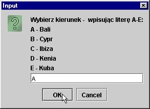

1. Napisy
W praktycznych programach bardzo czêsto bêdziemy operowaæ na ³añcuchach
znakowych (napisach). Wiemy doskonale, ¿e s± one reprezentowane przez obiekty
klasy String. W klasie tej znajdziemy wiele u¿ytecznych metod przeznaczonych
do operowania na ³añcuchach znakowych.
Dokumentacjê klas i ich metod standardowych pakietów Javy znajdziemy w podkatalogu
docs katalogu instalacyjnego Java SDK. Jest ona w postaci HTML: klasy podzielone
s± wed³ug pakietów a tak¿e dostêpna jest alfabetyczna lista wszystkich klas.
Proszê koniecznie otworzyæ dokumentacjê i oswoiæ siê z metodami nawigacji po¶ród ró¿nych pakietów, klas oraz ich metod.
Dla wygody poni¿ej przedstawiono wybrane metody klasy String.
Zwróæmy uwagê, ¿e:
- kolejne znaki napisów wystêpuj± na pozycjach, które s± indeksowane
poczynaj±c od 0: np. napis "Ala" ma trzy znaki na pozycjach 1, 2, 3; pierwsza
pozycja ma indeks 0, druga - 1, trzecia 2. Mo¿emy te¿ powiedzicæ, ¿e pierwszy
znak ma indeks 0, a ostatni - indeks o 1 mniejszy od d³ugo¶ci napisu,
- czê¶ci napisów (³añcuchów znakowych) okre¶la siê terminem "pod³añcuch" (substring),
- wiêkszo¶æ z omawianych dalej metod (wszystkie metody niestatyczne)
u¿ywana jest "na rzecz" obiektow klasy String; o obiekcie na rzecz którego
wywo³ano metodê mówimy ten napis,
- przedstawiono tu nie wszystkie metody klasy String, a jedynie te najbardziej
u¿yteczne; o niektórych innych u¿ytecznych metodach dowiemy siê przy okazji
omawiania wyra¿eñ regularnych w przysz³ym semestrze.
Wybrane metody klasy String
| char | charAt(int index)
Zwraca znak na pozycji, oznaczonej indeksem index. Pierwsza pozycja ma indeks 0. | int | compareTo(String anotherString)
Porównuje dwa napisy: ten (this) na rzecz którego u¿yto metody oraz przekazany jako argument.
Metoda zwraca 0, gdy napisy s± takie same.
Je¿eli siê ró¿ni±, to - gdy wystêpuj± w nich ró¿ne znaki - zwracana jest warto¶æ:
this.charAt(k) - anotherString.charAt(k),
gdzie k - indeks pierwszej pozycji, na której wystêpuje ró¿nica znaków. Je¿eli
d³ugo¶æ napisów jest ró¿na (a znaki napisów s± takie same w czê¶ci okre¶lanej
przez dlugo¶c krótszego napisu) - zwracana jest ró¿nica dlugo¶ci:
this.length() - anotherString.length().
Oznacza to, ¿e wynik jest ujemny, gdy ten (this) ³añcuch poprzedza leksykograficznie (alfabetycznie) argument (anothetString) oraz dodatni - gdy ten ³añcuch jest leksykograficznie wiêkszy od argumentu.
| int | compareToIgnoreCase(String str)
Porównuje leksykograficznie dwa napisy, bez rozró¿nienia ma³ych i wielkich liter. | boolean | endsWith(String suffix)
Zwraca true, gdy napis koñczy siê ³añcuchem znakowym podanym jako argument, false - w przeciwnym razie. | boolean | equals(Object anObject)
Zwraca true gdy anObject jest takim samym co do zawarto¶ci napisem jak ten napis; w ka¿dym innym przypadku - zwraca false. | boolean | equalsIgnoreCase(String anotherString)
J.w. - ale bez rozró¿niania ma³ych i wielkich liter. | int | indexOf(String str)
Zwraca indeks pozycji pierwszego wyst±pienia w danym napisie napisu
podanego jako argument str; je¿eli str nie wystêpuje w tym napisie - zwraca
-1 | int | indexOf(String str,
int fromIndex)
Poszukuje pierwszego wyst±pienia
napisu str poczynaj±c od pozycji oznaczonej przez indeks fromIndex; zwraca
indeks pozycji na której zaczyna siê str lub - 1 gdy str nie wystêpuje w
tym napisie.
Je¶li fromIndex jest ujemne lub zero - przeszukiwany jest ca³y napis; je¶li
fromIndex jest wiêksze od d³ugo¶ci napisu - zwracane jest -1.
| int | lastIndexOf(String str)
Jak indexOf - ale zwracany jest indeks pozycji ostatniego wyst±pienia. | int | lastIndexOf(String str,
int fromIndex)
J.w.
Uwaga: metody indexOf i lastIndexOf maj± równie¿ swoje wersje dla argumentów - znaków (typu char).
| int | length()
Zwraca d³ugo¶æ napisu. | String | replace(char oldChar,
char newChar)
Zwraca nowy obiekt klasy String, w którym zast±piono wszystkie wyst±pienia znaku oldChar na znak newChar. | boolean | startsWith(String prefix)
Zwraca true, gdy napis zaczyna siê podanym jako argument ³añcuchem znakowym; false - w przeciwnym razie. | boolean | startsWith(String prefix,
int toffset)
Zwraca true, gdy pod³añcuch
tego ³añcucha znakowego zaczynaj±cy siê na pozycji o indeksie toffset zaczyna
siê napisem prefiks; zwraca false w przeciwnym razie, lub gdy toffset jest
< 0 albo wiêkszy od dlugo¶ci napisu. | String | substring(int beginIndex)
Zwraca pod³añcuch tego ³añcucha znakowego zaczynaj±cy siê na pozycji o indeksie beginIndex (do koñca ³añcucha). | String | substring(int beginIndex,
int endIndex)
Zwraca pod³añcuch tego ³añcucha jako nowy obiekt
klasy String. Pod³añcuch zaczynay siê na pozycji o indeksie beginIndex,
a koñczy (uwaga!) - na pozycji o indeksie endIndex-1. D³ugo¶æ podlañcucha
równa jest endIndex - beginIndex. | char[] | toCharArray()
Znaki ³añcucha -> do tablicy znaków (typ char[]). | String | toLowerCase()
Zamiana liter na ma³e. | String | toUpperCase()
Zamiana liter na du¿e. | String | trim()
Usuwa znaki spacji, tabulacji, koñca wiersza itp. tzw. biale znaki
z obu koñców ³añcucha znakowego. Zwraca wynik jako nowy ³añcuch. | static String | valueOf(boolean b)
Zwraca warto¶æ boolowsk± (boolean) jako napis (String). | static String | valueOf(char c)
Zwraca warto¶æ typu char jako napis. | static String | valueOf(char[] data)
Zwraca napis z³o¿ony ze znakow tablicy. | static String | valueOf(double d)
Zwraca znakow± treprezentacjê liczby typu double. | static String | valueOf(float f)
Zwraca znakow± treprezentacjê liczby typu float. | static String | valueOf(int i)
Zwraca znakow± treprezentacjê liczby typu int. | static String | valueOf(long l)
Zwraca znakow± reprezentacjê liczby typu long. |
W pierwszym przyk³adowym programie wykorzystamy metodê charAt, zwracaj±c± znak znajduj±cy siê w napisie na podanej pozycji.

Problem: napisaæ program, który prosi u¿ytkownika o wybranie jednej z mo¿liwych
wycieczek oznaczanych du¿ymi literami A, B, C ..., po czym podaje cenê tej
wycieczki. Miejsca docelowe wycieczek oraz ich ceny maj± byæ zapisane w tablicach, np.:
String[] dest = { "Bali", "Cypr", "Ibiza",
"Kenia", "Kuba" };
double[] price = { 5000, 2500, 2800, 4500,
6000 };
a program winien dawaæ u¿ytkownikowi mo¿liwo¶æ wyboru za pomoc± pokazanego obok okna dialogowego.
Przed lektur± dalszego tekstu proszê to zadanie rozwi±zaæ samodzielnie
A zatem u¿ytkownik wprowadza napis, sk³adaj±cy siê z jednej litery "A" lub "B" lub "C', ... itd.
Dalsze dzia³anie programu zale¿y od tego jak± literê wprowadzil.
Je¶li res oznacza wprowadzony napis, to mogliby¶my np. napisaæ:
if (res.equals("A")) System.out.println(dest[0] + " - cena: " + price[0]);
else if (res.equals("B")) System.out.println(dest[1] + " - cena: " + price[1]);
else if (res.equals("C")) ..
else if (res.equals("D")) ...
else if (res.equals("E")) ..
else ...
Ale jest to do¶æ uci±¿liwe i nieeleganckie. Nara¿one na b³êdy. Trudne do modyfikacji.
A przecie¿ wprowadzona litera daje nam natychmiastowe odniesienie do odpowiednich
elementów tablic dest i price. Litera to znak. Znak ma swój kod. Kod jest
liczb±. £atwo jest wiêc przekszta³ciæ znaki w odpowiednie indeksy tablic.
Znak A powinien daæ indeks 0, znak B - indeks 1, znak C - indeks 2.
Zauwa¿my, ¿e: 'A' - 'A' = 0 , 'B'- 'A' = 1, 'C' - 'A' = 2 ...
Zatem wyliczenie odpowiedniego indeksu mo¿na zapisac tak:
indeks = <wprowadzony_znak> - 'A'
No, ale musimy jeszcze siêgn±æ po ten znak. Z dialogu dostajemy napis (³añcuch
znakowy). To jest dana typu String, a nie char. Napis ten sk³ada siê z jednego znaku,
znajduj±cego siê na pierwszej pozycji ³añcucha (czyli pod indeksem 0). Znak
ten otrzymamy stosuj±c metodê charAt z klasy String.
Je¶li res oznacza wprowadzony napis, to - zamiast poprzedniej "piêtrowej" konstrukcji if-else mo¿emy po prostu napisaæ:
int i = res.charAt(0) - 'A';
System.out.println(dest[i] + " - cena: " + price[i]);
Ca³y program pokazano poni¿ej.
import javax.swing.*;
public class Wycieczki {
public static void main(String[] args) {
String[] dest = { "Bali", "Cypr", "Ibiza", "Kenia", "Kuba" };
double[] price = { 5000, 2500, 2800, 4500, 6000 };
String msg = "Wybierz kierunek - " +
" wpisuj±c literê A-"+ (char) ('A'+dest.length-1)+ ":\n";
for (int i=0; i < dest.length; i++)
msg += (char) ('A' + i) + " - " + dest[i] + '\n';
String res;
while ((res = JOptionPane.showInputDialog(msg)) != null) {
int i = res.charAt(0) - 'A';
if (i < 0 || i > dest.length -1) continue;
JOptionPane.showMessageDialog(null, dest[i] + " - cena: " + price[i]);
}
System.exit(0);
}
}
Dodatkowe komentarze:
- w oknie dialogowym wprowadzania danych tekst komunikatu (msg) sk³ada
siê z kilku wierszy; tekst dzielimy na wiersze za pomoc± znaku '\n',
- program napisano w taki sposób, ¿e przy zmianie liczby wycieczek nale¿y
zmieniæ tylko inicjacje tablic dest i price; inne fragmenty kodu nie ulegn±
zmianie!,
- przy tworzeniu komunikatu (msg) znowu wykorzystano mo¿liwo¶æ traktowania
znaków jako liczb (kody znaków); jednak operacje arytmetyczne na znakach
daj± w wyniku warto¶ci typu int, a poniewa¿ chcemy pokazaæ znak , a nie jego
kod (int) - to musimy jawnie przekszta³ciæ te warto¶ci do typu char - st±d
konieczno¶æ u¿ycia operatora konwersji (char)
- poprawno¶æ pierwszego znaku wprowadzonego napisu (czy mie¶ci siê w
przedziale A-E) sprawdzamy za pomoc± if; innym sposobem obs³ugi b³êdu by³aby
obs³uga wyj±tku (ArrayIndexOutOfBoundsException).
Spróbujmy teraz rozwi±zaæ inne zadanie. Wyobra¼my sobie, ¿e mamy dokument
html o prostej strukturze, w którym kolejne tytu³y punktów tre¶ci znajduj±
siê miêdzy znacznikami <h2> ... </h2> (tekst zawarty pomiêdzy
otwieraj±cym znacznikiem <h2> i zamykaj±cym znacznikiem </h2>
- traktowany jest jako nag³ówek drugiego poziomu i odpowiednio do tego formatowany
przy wy¶wietlaniu w przegl±darce).
Naszym zadaniem jest wypisanie wszystkich takich nag³ówków.
Uwaga. W tej chwili zajmujemy siê najbardziej prymitywnym rozwi±zaniem
problemu, w oparciu o "tradycyjne" metody klasy String. G³ównie po to, by
przeæwiczyæ stosowanie tych metod. Inne rozw±zania mog± wykorzystywac parsery
HTML lub wyra¿enia regularne
Na razie jeszcze nie umiemy wczytywac plików,
ale mo¿emy ju¿ przygotowaæ i przetestowaæ klasê, która pozwoli "wy³uskiwaæ"
z dokumentu nag³ówki drugiego poziomu.
Niech ta klasa (trochê na wyrost) nazywa siê Toc. Przy tworzeniu obiektu
tej klasy przekazujemy konstruktorowi ca³y dokument HTML w postaci ³añcucha
znakowego, a wywo³anie metody String getToc() - ma zwróciæ listê nag³ówków
drugiego pioziomu, rozdzielonych separatorami nowego wiersza. Listê tê mo¿emy
nastêpnie wypisaæ na konsoli lub skierowaæ standardowy strumieñ wyj¶ciowy
do pliku.
Jak podej¶æ do tego problemu?
W tek¶cie dokumentu musimy kolejno znajdowaæ pocz±tki nag³ówków ("<h2>"),
a nastêpnie "wy³uskiwaæ" pod³añcuchy, które s± zawarte pomiêdzy znacznikami
"<h2>" i "</h2>". Do znajdowania napisów w napisie s³u¿y metoda
indexOf, do "wy³uskiwania" pod³acuchów metod substring. Uwaga: powinni¶my
zastosowaæ tê wersjê metody indexOf, która zaczyna poszukiwanie od podanej
pozycji ³añcucha i wraz z postêpem przeszukiwania odpowiednio zmieniaæ tê
pozycjê.
Przed lektur± dalszego tekstu proszê to zadanie rozwi±zaæ samodzielnie
Klasa Toc mo¿e wygl±daæ tak.
import javax.swing.*;
public class Toc {
private String doc; // przekazany dokument
private String toc = ""; // wynikowy spis tre¶ci
// separator koñca wiersza; poniewa¿ jest zale¿ny od systemu
// pobieramy go jako warto¶æ tzw. w³a¶ciwo¶ci systemowej
private final String ls = System.getProperty("line.separator");
public Toc(String doc) { // Konstruktor
this.doc = doc;
}
public String getToc() {
int p = 0; // pozycja od której zaczynamy szukanie "<h2>"
while ((p = doc.indexOf("<h2>", p)) != -1) { // dopóki s± "<h2>"
// poszukajmy znacznika zamykaj±cego
// end jest indeksem pozycji na której on wystêpuje
int end = doc.indexOf("</h2>", p+4);
// je¿eli go nie ma ...
if (end == -1) return Emsg("Invalid document structure");
// w przeciwnym razie: wy³uskujemy nag³ówek
toc += doc.substring(p+4, end) + ls; // ls - separator wierszy
p = end + 5; // i przesuwamy pozycjê od której bêdziemy dalej szukaæ
}
return toc;
}
private String Emsg(String txt) { // komunikat o b³êdzie
JOptionPane.showMessageDialog(null, txt);
return toc;
}
Uwaga: powy¿sza wersja programu nie obs³uguje przypadku wadliwej struktury
dokumentu, gdy znacznik <h2> wystêpuje pomiêdzy znacznikami <h2>
i </h2>.
Przy okazji tego programu wykorzystali¶my mo¿liwo¶æ pobierania w³a¶ciwo¶ci systemowych. Za pomoc± odwo³ania:
System.getProperty("line.separator")
zapytali¶my Javy jaki na danej platformie systemowej obowi±zuje separator
wierszy (w plikach), Zauwa¿my, ¿e ró¿ne systemy stosuj± ró¿ne separatory (np.
pod Unixem jest to 0d , a pod Windows 0d0a - szesnastkowo). Poniewa¿ nasz
spis tre¶ci chcemy zapisywaæ do pliku to musimy u¿yæ znaku separatora wierszy.
A zgodnie z za³o¿eniami Javy (wieloplatformowo¶æ) powinni¶my przygotowaæ
program tak by dzia³al bez rekompilacji na ka¿dej platformie.
Klasê Toc mo¿emy na razie przetestowaæ na "sztywno" zadanym dokumencie. Za
chwilê, gdy nauczymy siê wczytywaæ pliki - zobaczymy jak dzia³a na konkretnych
plikach html.
class TocTest {
public static void main(String[] args) {
String doc = "<h2>1.1. Punkt 1</h2>" +
"ble ble ble ble ble " +
"ble ble ble ble ble " +
"<h2>1.2. Punkt 2</h2>" +
"ble ble ble ble ble " +
"ble ble ble ble ble " +
"<h2>1.3. Punkt 3</h2>" +
"ble ble ble ble ble " +
"ble ble ble ble ble " +
"ble ble ble ble ble " +
"ble ble ble ble ble " +
"<h2>1.4. Punkt 4</h2>" +
"ble ble ble ble ble " +
"ble ble ble ble ble " +
"<h2>1.5. Punkt 5</h2>" +
"ble ble ble ble ble " +
"ble ble ble ble ble " ;
System.out.println(new Toc(doc).getToc());
}
}
Wydruk programu (mo¿emy go przekierowaæ do pliku np. tak: java TocTest > out):
1.1. Punkt 1
1.2. Punkt 2
1.3. Punkt 3
1.4. Punkt 4
1.5. Punkt 5
Pewn± zaskakuj±c± mo¿e w³a¶ciwo¶ci± klasy String jest to, ¿e jej obiekty s± niemodyfikowalne - to znaczy utworzonych za pomoc± klasy String napisów nie mo¿emy zmieniaæ (np. do napisu dodaæ inny).
Jak to ??? Przecie¿ wielokrotnie zajmowali¶my siê konkatenacj± ³añcuchów.
No tak, ale wynikowy napis, powstaj±cy z dodania do ³añucha znakowego innego napisu, jest nowym obiektem i np. w takiej sekwencji:
String s = "Ala";
s = s + " ma kota";
tworzony jest nowy obiekt, zawieraj±cy napis "Ala ma kota" i referencja do
niego przypisywana jest zmiennej s, która poprzednio zawiera³a referencjê do napisu "Ala".
Zwróæmy te¿ uwagê, ¿e w klasie String nie ma ¿adnych metod pozwalaj±cych modyfikowaæ istniej±cy obiekt-napis.
Czasami jednak zmiany obiektów napisów s± potrzebne.
Modyfikowalne obiekty-³añcuchy znakowe definiuje klasa StringBuffer.
Obiekty klasy StringBuffer to "bufory", które dynamicznie mo¿emy wype³niaæ
napisami. W szczególno¶ci mo¿emy utworzyæ pusty - na razie - bufor:
StringBuffer sb = new StringBuffer();
po czym wupelniaæ go zawarto¶æi± dopisuj±c do niego jakie¶ kolejne napisy:
sb.append("jaki¶ napis 1");
sb.append("jaki¶ napis 2");
...
Obiekt klasy StringBuffer ³atwo mo¿na przekszta³æiæ w obiekt klasy String za pomoc± metod toString():
String s = sb.toString();
Proszê zapoznaæ siê z dokumentacj± klasy StringBuffer.
Wykorzystanie klasy StringBuffer zamiast String jest wskazane przy du¿ej liczbie "kumulatywnych" operacji konkatenacji.
Jak ju¿ wspomniano, ka¿da operacja konkatenacji obiektów klasy String zapisana
za pomoc± operatora + powoduje stworzenie nowego obiektu klasy String i skopiowanie
do "jego wnêtrza" znaków ³±czonych ³añcuchów. Jest to dosyæ czasoch³onne.
Ró¿nicê pokazuje poni¿szy program (przygotowany w oparciu o materia³y JDC TechTips - biuletynu Java Developer Connection).
Do mierzenia czasu operacji korzystamy w nim z klasy QTimer, w której zdefiniowali¶my
metodê getElapsed() zwracaj±c± up³yw czasu od mometu utworzenia obiektu tej
klasy. Czas mierzymy za pomoc± statycznej metody klasy System currentTimeMillis(),
która zwraca bie¿±cy czas w milisekundach.
import javax.swing.*;
class QTimer {
private final long start;
public QTimer() {
start = System.currentTimeMillis();
}
public long getElapsed() {
return System.currentTimeMillis() - start;
}
}
public class Test {
public static void main(String args[]) {
int n = Integer.parseInt(JOptionPane.showInputDialog("Liczba operacji"));
QTimer t = new QTimer();
String strA = "";
for (int i = 1; i <= n; i++) strA += "A";
long etA = t.getElapsed();
System.out.println("String operator +; Czas: " + etA + " ms");
t = new QTimer();
StringBuffer sb = new StringBuffer();
for (int i = 1; i <= n; i++) sb.append("B");
String strB = sb.toString();
long etB = t.getElapsed();
System.out.println("StringBuffer append. Czas: " + etB + " ms");
System.out.println("Wykonano " + n + " operacji.");
System.out.println("Relacja A/B = " + (double) etA/etB);
System.exit(0);
}
}
Wynik:
String operator +; Czas: 3900 ms
StringBuffer append. Czas: 60 ms
Wykonano 9000 operacji.
Relacja A/B = 65.0
Jak widaæ, "kumulatywna" konkatenacja za pomoc± klasy StringBuffer jest (przy
9 tys. operacji konkatenacji) 65-krotnie szybsza ni¿ za pomoc± operatora
+.
|